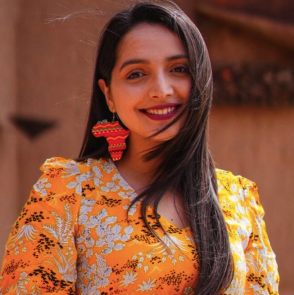

About Amal
My journey spans from the halls of UN climate conferences to youth empowerment initiatives across Tunisia and beyond. I believe in the power of collaboration, innovation, and authentic leadership to create lasting change.

My Story
From Tunisia to the global stage, driven by a passion for sustainable development
Current Roles & Affiliations
Leading change across multiple organizations and initiatives
🌍 Global Shapers Tunis Hub
Leading a community of young leaders in Tunis, coordinating projects and events that focus on social impact, climate action, and civic engagement. Part of the World Economic Forum's global network of changemakers under 30.
🎓 University of Sussex
Pursuing an MSc in Sustainable Development at the Science Policy Research Unit, focusing on blended finance and innovative funding models for climate solutions. Supported by the UK government's prestigious scholarship program.
🏕️ World Scout Conference 2024
Leading the highest gathering of Scouting delegates globally, ensuring that young people have a voice in shaping the strategy and vision of the World Organization of the Scout Movement.
💰 Glasgow Financial Alliance for Net Zero
Contributing youth and emerging market perspectives to high-level discussions on redirecting capital toward climate action as part of the international coalition of financial institutions.
Additional Key Positions
Professional Journey
Key milestones in my career and advocacy work
UN Climate Champions Finance Fellow
Selected as Finance Youth Fellow with the UN Climate Change High-Level Champions Team, working to mobilize climate action among non-State actors.
Chevening Scholarship
Awarded the prestigious UK government scholarship to pursue MSc in Sustainable Development at the University of Sussex.
UN Climate Negotiations
Led Tunisia's Climate Finance negotiation team at COP26, COP27, and COP28, representing youth perspectives in global climate policy.
AfricInvest - Investor Relations
Served as Investor Engagement Officer at leading pan-African private equity firm, integrating climate considerations into investment decisions.
WOSM Board Leadership
Served on the World Organization of the Scout Movement board, representing 57 million Scouts worldwide in strategic decision-making.
Values & Philosophy
The principles that guide my work and leadership approach
Collaboration
Believing that the most complex challenges require diverse perspectives and collective action. I work to bring together stakeholders from different sectors and backgrounds.
Youth Leadership
Championing the idea that young people are not just future leaders, but present-day changemakers who deserve seats at decision-making tables today.
Innovation
Exploring creative solutions and funding mechanisms that can scale sustainable development initiatives and drive systemic change.
Sustainability
Committed to solutions that balance economic, social, and environmental considerations for long-term impact and resilience.
Impact Focus
Measuring success not just by outputs, but by real outcomes that improve lives and protect our planet for future generations.
Global Citizenship
Understanding that local actions have global implications, and that we must work together across borders to address shared challenges.
Let's Connect
I'm always eager to connect with fellow changemakers, discuss collaboration opportunities, or share insights about sustainable development and youth leadership.